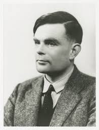

Une technologie qui a plus de 86 ans
L’Intelligence Artificielle n’est pas une discipline récente ! Bien que découverte par le grand public en 2022 avec la mise sur le marché de ChatGPT, l’idée de l’IA est née au XIXe siècle.
1938
Déchiffrage de la machine Enigma par Alan Turing
La machine Enigma est utilisée par les Allemands durant la Seconde Guerre mondiale pour transmettre des messages codés. Les Britanniques vont réussir à décoder les messages grâce aux travaux du mathématicien Alan Turing. La création d’un appareil de décodage automatique baptisé « la Bombe » puis d’un calculateur électronique de grande taille, appelé Colossus (premier ordinateur) a permis d’écourter la guerre de deux ans grâce aux décodages de messages clé.
1950
Première fois que la question « les machines peuvent-elles penser ? » est posée
Alan Turing se pose cette question dans son article “Computing Machinery and Intelligence”. Il décrit un “jeu de l’imitation” où un homme devrait arriver à distinguer s’il converse avec un homme ou une machine. Le “test de Turing” est né.
1959
Création du laboratoire d’intelligence artificielle du MIT
Fondé par deux pionniers de l’IA : John McCarthy et Marvin Minsky
2015
Fondation de OpenIA

À l'origine, OpenAI était une association à but non lucratif
2023
L’IA Safety Summit
Premier sommet mondial sur les risques de l’IA se déroulant au Royaume-Unis.